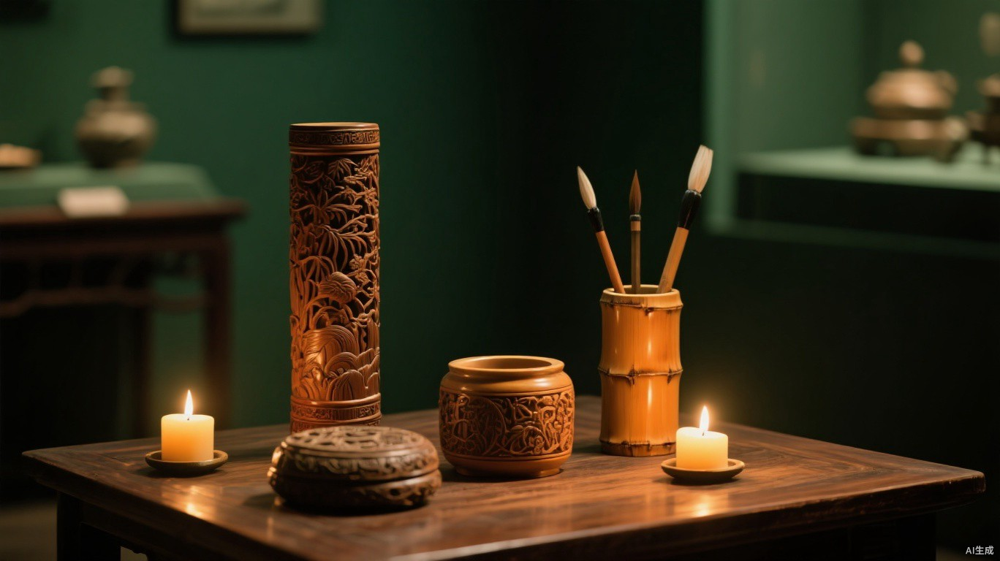

点 击 探 索
历史时间轴
CLICK THE TIMELINE · 点击任一时期，展开它的故事
亦可点击上方时间节点切换

留 青 竹 刻 的 历 史 长 河
OVERVIEW OF A MILLENNIUM
中国竹刻艺术源远流长。竹，虚心有节、四季常青，自古便是文人品格的象征；以刀刻竹，更是将自然之材与人文之心熔铸一炉。在竹刻诸技法中，留青一脉最为清雅——它保留竹面一层青筠为图，以去留分浓淡，以岁月养颜色。
从唐代的早期实物，到明末张希黄技法大成；从近现代徐素白、白士风的双星辉映，到当代徐秉方的承古开今；再到2008年入选国家级非物质文化遗产名录——常州留青竹刻的千年长卷，徐徐展开如下。
CLICK THE TIMELINE · 点击任一时期，展开它的故事